UDN
Search public documentation:
StaticMeshEditorUserGuide
日本語訳
中国翻译
한국어
Interested in the Unreal Engine?
Visit the Unreal Technology site.
Looking for jobs and company info?
Check out the Epic games site.
Questions about support via UDN?
Contact the UDN Staff
中国翻译
한국어
Interested in the Unreal Engine?
Visit the Unreal Technology site.
Looking for jobs and company info?
Check out the Epic games site.
Questions about support via UDN?
Contact the UDN Staff
UE3 Home > Unreal Editor and Tools > Static Mesh Editor User Guide
UE3 Home > Static Meshes > Static Mesh Editor User Guide
UE3 Home > Environment Artist > Static Mesh Editor User Guide
UE3 Home > Static Meshes > Static Mesh Editor User Guide
UE3 Home > Environment Artist > Static Mesh Editor User Guide
Static Mesh Editor User Guide
Overview
Opening the Static Mesh Editor
Static Mesh Editor Interface
Menu Bar
Mesh
- Import Mesh LOD... - Opens a file dialog allowing you to choose a mesh to import as an LOD mesh for a specific LOD.
- Remove an LOD... - Removes an LOD mesh for a specific LOD.
- Generate LOD... - Generates a new LOD mesh for a specific LOD using a reduction algorithm.
- Generate Unique UVs... - Opens the Generate Unique UVs pane for generating a set of unique (non-overlapping) texture coordinates.
- Export Light Map Mesh (.OBJ)... - Exports the static mesh to .OBJ for the purpose of editing less than ideal lightmap UVs in an external application.
- Import Light Map Mesh (.ASE)... - Imports a static mesh in .ASE format after having its UVs edited in an external application.
- Change Mesh - Changes the static mesh asset loaded in the Static Mesh Editor to the asset currently selected in the Content Browser.
- Fixup empty/bad elements - Needs Description.
View
- Realtime - Toggles whether the viewport updates in realtime, or only when clicked on / moused over. By default, it is turned off, and you may need to click in the viewport once after the mesh is loaded in order to get streamed textures displaying at high resolution.
- UV Overlay - Toggles display of the static mesh's UVs for the channel specified in the LightMapCoordinateIndex property of the static mesh asset in the Preview Pane.
- Wireframe - Toggles the viewmode of the Preview Pane between a lit view and a wireframe view.
- Bounds - Toggles display of the bounds of the static mesh.
- Collision - Toggles display of the simplified collision mesh of the static mesh, if one has been assigned.
- Normals - Toggles display of vertex normals in the Preview Pane.
- Tangents - Toggles display of vertex tangents in the Preview Pane.
- Binormals - Toggles display of vertex binormals (orthogonal vector to normal and tangent) in the Preview Pane.
- Lock Camera - Toggles viewport navigation between allowing you to move the camera as you would elsewhere in the editor and an orbit mode only allowing rotating about the static mesh and zooming in and out.
Tool
- Save Thumbnail Angle - Saves the viewpoint from the current camera position and orientation in the Preview Pane for use as the thumbnail preview in the Content Browser.
- Fracture Tool - Opens the Fracture Tool for creating a new Fractured Static Mesh from the current static mesh asset.
Collision
- 6DOP Simplified Collision - Generates a new axis-aligned box collision mesh (6 total sides) encompassing the static mesh.
- 10DOP-X Simplified Collision - Generates a new axis-aligned box collision mesh with the 4 X-axis aligned edges beveled (10 total sides) encompassing the static mesh.
- 10DOP-Y Simplified Collision - Generates a new axis-aligned box collision mesh with the 4 Y-axis aligned edges beveled (10 total sides) encompassing the static mesh.
- 10DOP-Z Simplified Collision - Generates a new axis-aligned box collision mesh with the 4 Z-axis aligned edges beveled (10 total sides) encompassing the static mesh.
- 18DOP Simplified Collision - Generates a new axis-aligned box collision mesh with all edges beveled (18 total sides) encompassing the static mesh.
- 26DOP Simplified Collision - Generates a new axis-aligned box collision mesh with all edges and corners beveled (26 total sides) encompassing the static mesh.
- Sphere Simplified Collision - Generates a new sphere collision mesh encompassing the static mesh.
- Auto Convex Collision - opens the Auto Convex Collision Tool for generating a new convex collision mesh, or meshes.
- Remove Collision - Removes any simplified collision assigned to the static mesh.
- Convert Boxes to Convex - Converts any simple box collision meshes to convex collision meshes.
Window
- Properties - Toggles display of the Properties Pane.
- Mesh Simplification - Toggles display of the Mesh Simplification Tool.
- Generate Unique UVs... - Toggles display of the Generate Unique UVs pane.
Tool Bar
| Toggles whether the viewport updates in realtime, or only when clicked on / moused over. By default, it is turned off, and you may need to click in the viewport once after the mesh is loaded in order to get streamed textures displaying at high resolution. | |
| 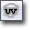 | Toggles display of the static mesh's UVs for the channel specified in the LightMapCoordinateIndex property of the static mesh asset in the Preview Pane. |
| Toggles the viewmode of the Preview Pane between a lit view and a wireframe view. | |
| 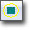 | Toggles display of the bounds of the static mesh. |
| 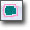 | Toggles display of the simplified collision mesh of the static mesh, if one has been assigned. |
| Toggles viewport navigation between allowing you to move the camera as you would elsewhere in the editor and an orbit mode only allowing rotating about the static mesh and zooming in and out. | |
| 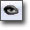 | Saves the viewpoint from the current camera position and orientation in the Preview Pane for use as the thumbnail preview in the Content Browser. |
| 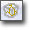 | Opens the Fracture Tool for creating a new Fractured Static Mesh from the current static mesh asset. |
| 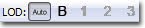 | Allows you to view a specific LOD for the static mesh or allow automatic swapping of LODs based on the size of the mesh on screen in the Preview Pane. |
Preview Pane
The Preview Pane shows a rendered (or optionally wireframe) view of the static mesh asset. This allows you to examine the static mesh as it would be rendered in-game. This viewport also allows you to preview the bounds of the static mesh asset as well as its collision mesh, if one has been assigned. In addition, the UVs of the static mesh can be displayed. Overlayed onto the Preview Pane is a set of statistics or information about the static mesh asset. 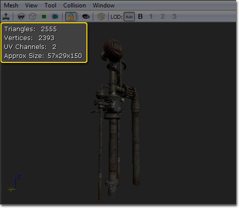 In this information you will find the following:- Triangles - Displays the number of triangles in the static mesh.
- Vertices - Displays the number of vertices in the static mesh.
- UV channels - Number of UV channels. Unique, non-overlapping UVs are required for shadow mapping (see ShadowingReference).
- Approx Size - Displays the approximate size (Length x Width x Height) of the static mesh in Unreal units with a scale of 1 in all axes.
Properties Pane
Properties for a given static mesh are set here. These properties will apply to all instances of the static mesh unless overridden locally in the map.- Body Setup - The properties under Body Setup are physics-related and only relevant when the static mesh asset is being used by some sort of phsyics actor.
- Always Full Anim Weight - Skeletal mesh related. Has no effect.
- Block Non Zero Extent - If true, the body will block non-zero extent collision checks, such as swept-box player collisions.
- Block Zero Extent - If true, the body will block zero-extent collision checks, such as instant hit weapon fire.
- COMNudge - Offsets the center of mass of the body.
- Consider For Bounds - If true, the body will be taken into account when calculating the bounds.
- Enable Continuous Collision Detection - If true, continuous collision detection in order to keep the body from passing through geometry when moving at high velocities.
- Fixed - If true, no dynamic simulation will be calculated for the body. It will be fixed in the world.
- Mass Scale - A multiplier for the default mass calculated based on the volume of the body.
- No Collision - If true, collision will be disabled for the body.
- Phys Material - Sets the Physical Material to use for the body.
- Pre Cached Phys Scale - An array of scales at which to pre-cache phsyics data for this body.
- Sleep Family - Sets the sleep family for the body. Used to determine when and under what conditions the body should be put to sleep.
- Can Become Dynamic - If true this mesh can become dynamic when shot or otherwise given an impulse. See Interactive Static Meshes.
- Light Map CoordinateIndex - Determines which set of UVs will be used for calculating shadow maps and light maps. Shadow maps require unique, non-overlapping, non-tiling UVs. Since this is not always the most efficient option for texturing an object, a separate set of unique UVs can be used for Shadow mapping. For more on shadow maps see the ShadowingReference.
- Light Map Resolution - Determines resolution of shadow map. Type only one dimension of desired shadow map (enter "256" if you want a 256x256 shadow map). No value (the default) means no shadow map will be created (only vertex shading will be used). Again, the ShadowingReference has more information.
- LOD Distance Ratio - Multiplier that adjusts the distances at which LOD transitions occur.
- LOD Info - Array of LODs for the static mesh asset. Each LOD has a list of elements which in turn each have an array of material slots. Each material slot has the following:
- Enable Per Poly Collision - If true, per-poly collision will be used for the geometry associated with this material slot.
- Enable Shadow Casting - If true, the geometry associated with this material slot will use the StaticMeshActor's global shadow casting settings. Otherwise, no shadow will be cast by the geometry.
- Material - The Material to be used by the geometry associated with this material slot.
- LODMax Range - Distance from the camera where the final LOD transition should occur. Transitions occur every LODMax Range / Number of LODs units.
- Streaming Distance Multiplier - Adjusts the resolution of streaming textures that use UV 0. 1.0 is the default; A higher value increases the streamed-in resolution.
- Use Full Precision UVs - By default static meshes use half precision (16 bit) UVs in order to save memory. Enabling this option forces the mesh to use full precision (32 bit) UVs. This might be needed for certain cases when seeing artifacts with texture mapping the mesh.
- Use Maximum Streaming texel Ratio - If true, this mesh will use a less conservative method of mip LOD texture factor computation. Requires re-saving the package as it is applied on saving.
- Use Simple Box Collision - The Use Simple Box Collision field has extensive documentation. See the Collision Reference for a handy reference. For a general guide to static mesh collision, see the StaticMeshCollisionReference doc.
- Use Simple Line Collision - The Use Simple Line Collision field has extensive documentation. See the Collision Reference for a handy reference. For a general guide to static mesh collision, see the StaticMeshCollisionReference doc.
- Use Simple Rigid Body Collision - The Use Simple Rigid Body Collision field has extensive documentation. See the Collision Reference for a handy reference. For a general guide to static mesh collision, see the StaticMeshCollisionReference doc.
- Used For Instancing - If true, the mesh will be used for instancing.
Controls
Mouse Controls
Preview Pane- LMB + Drag - If the camera is locked, rotates the mesh around its Z-axis and moves towards or away from the origin. Otherwise, rotates the camera around its Z-axis and moves the camera along its local X-axis.
- RMB + Drag - If the camera is locked, rotates the mesh. Otherwise, rotates the camera.
- LMB + RMB + Drag - If the camera is not locked, moves the camera along its local YZ-plane.
Keyboard Controls
- Ctrl + R - Toggles realtime in the Preview Pane.
- L + Mouse Move - Rotates the preview light in the Preview Pane.
LODs
Viewing LODs
There are some buttons on the toolbar of the StaticMeshViewer which allow you to see how the different LOD levels for a mesh look:| 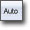 | Select the LOD level to use automatically, based on the size of the mesh on the screen. This allows you to preview how the mesh will look in-game. |
| 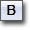 | Force the display to use the 'Base' mesh (ie LOD 0). |
| 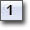 | Force the display to use LOD 1. Will be disabled unless a LOD mesh for this LOD has been imported. |
| 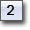 | Force the display to use LOD 2. Will be disabled unless a LOD mesh for this LOD has been imported. |
| 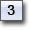 | Force the display to use LOD 3. Will be disabled unless a LOD mesh for this LOD has been imported. |
Importing An LOD
First open the StaticMeshViewer with the StaticMesh that you want to add an LOD to. Then under the 'Mesh' menu select 'Import Mesh LOD...'. You will be asked to specify the ASE file that contains the lower-detail version of that mesh. Once you have selected the .ASE to import, a combo box will pop up allowing you to choose which LOD level to import this mesh as. LOD 0 is the 'base', or highest poly mesh. LOD 1 is the first step down and so on. Importing at an LOD that already exists will replace the existing LOD mesh. If your import goes successfully and does not generate any errors, you can press the appropriate 'Force LOD' button on the toolbar to see if your mesh came in correctly. You can remove any imported LOD level through the 'Mesh' menu under 'Remove an LOD...'Configuring LODs
DisplayFactor is based on how large the objects bounding sphere appears on screen. 1.0 would indicate it completely fills the screen in one direction. In splitscreen it takes the largest DistanceFactor for any viewport. LODInfo contains a list of all LODs for this StaticMesh. For each LOD you will find the following properties:| Materials | An array of materials used by this LOD. LODs can have different materials. Additionally, LOD instances can override this setting for per-instance LOD materials |
Generating LODs
You can generate an LOD from the base LOD to quickly get simplified geometry. To generate a new LOD, choose Mesh->Generate LOD. Next choose which LOD you want to overwrite (the highest number available will let you add a new LOD) and input a target face count. The simplifier will do its best to get the mesh down to this target, but the resulting face count may not be exact. Generating an LOD for a large mesh may take several minutes.UVs
Generating UVs
The Static Mesh Editor includes a built-in tool for unwrapping unique UVs for your mesh LODs. That is, it will create UV coordinates such that every point on the mesh's surface maps to a unique point in the UV map. You can find it under Mesh menu as Generate Unique UVs.... This will summon a window that allows you to configure unwrapping options and apply the changes to your mesh. 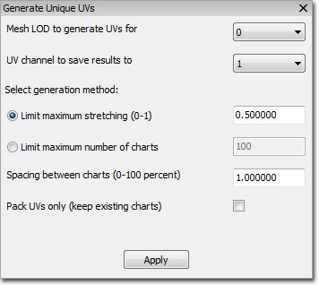 First, select the mesh LOD number and the UV channel to save the results to. Usually you'll set the UV channel to 1 when generating unique UVs for use with light maps. The next settings are the most important. This is where you'll configure how your model is unwrapped into "charts" and packed into the UV coordinate space. There are two modes of operation here, and you have to choose one of them:| Limit maximum stretching | Tries to prevent texels from being stretched disproportionally to the mesh's surface area. You can provide a value between 0.0 and 1.0 that sets the "stretch limit", or the amount of stretch that you're okay with. Lower values allow less stretching and are appropriate for rigid models like architectural pieces, while higher values allow for more stretching and generally work better for organic models. In any case, lower values will usually result in a larger number of separate charts and thus, more UV seams. |
|---|---|
| Limit maximum number of charts | Tries to keep the number of UV seams to a minimum by limiting the total number of charts that are created. Start out by setting this to a very low number. If the UV generation process fails, it simply means that the algorithm wasn't able to unwrap the model into such a low chart-count. Use progressively larger values until you get an acceptable result. Note that if you use a very large value here, usually the algorithm will always use the maximum number of charts! This often results in many UV seams, so try to keep this number low. |
Viewing UVs
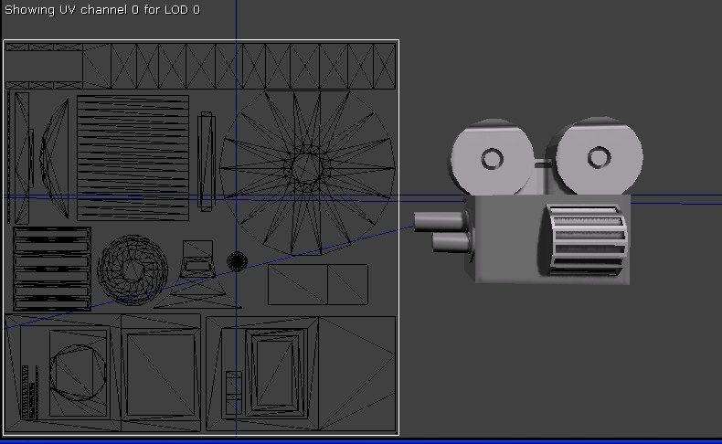 You can bring up the UV Overlay by clicking on its toolbar icon or by choosing it from the View menu. The UV channel specified by LightMapCoordinateIndex will be shown, on the current LOD. The origin in texture space is the top left corner.Light Map Import/Export Pipline for MAX UV Editing
OVERVIEW The light map import/export pipeline was added to allow for static meshes in Unreal that have non-optimal light map UV layouts to be edited in MAX. The workflow should be as follows:- Export Static Meshes from Unreal to .OBJ file
- Import .OBJ file into MAX
- Fix UVs in MAX
- Export out of MAX to .ASE file
- Import .ASE back into Unreal and merge with original model
Right click on any of them, and select "Export Light Map Meshes (.OBJ)..." 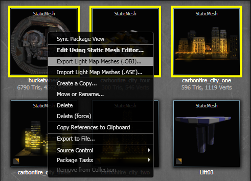 2) SELECTING A DIRECTORY Navigate to a directory you want the lightmap meshes exported to. NOTE: These will be exported with "_UVs_LOD_#" appended to the end of the file name. 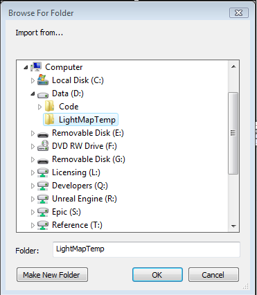 3) IMPORTING INTO MAX Select File-->Import from the main menu 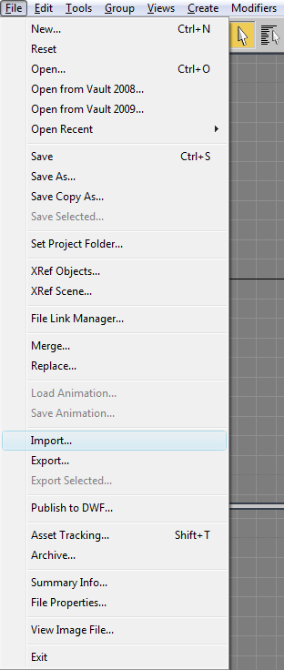 Set filter to *.OBJ
Navigate to export directory
Select the file you want to modify 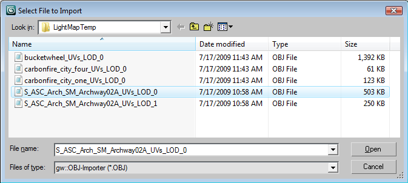 If Texture coordinates aren't on by default, please make sure it is checked 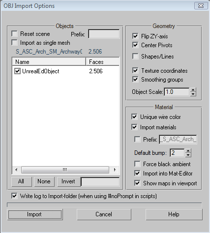 4) CHANGE THE UVS Edit the Uvs in the Unwrap UVW modifier 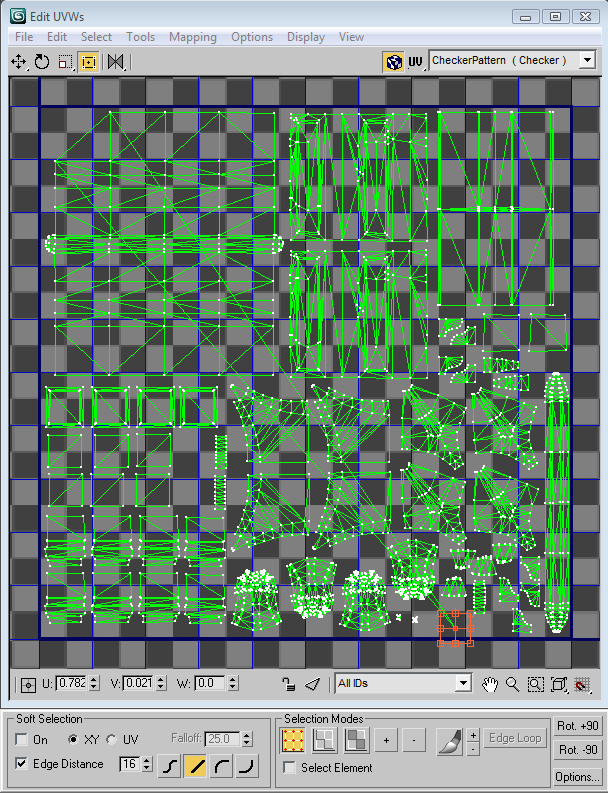 5) EXPORTING OUT OF MAX Select File-->Export from the main menu 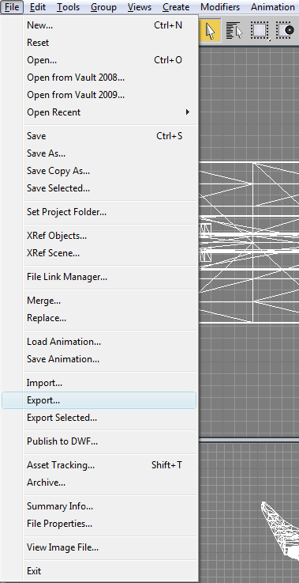 Set filter to *.ASE
Navigate to export directory
Set file name for export NOTE: Please be sure to save the .ASE file with the SAME NAME as the imported .OBJ file (with the exception of the extension and directory). Since this tool can be used for bulk export/import, the naming convention is used to match up the model & LOD pair on import. 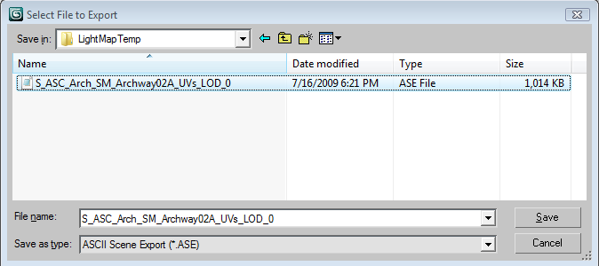 Ensure that Mapping Coordinates is checked 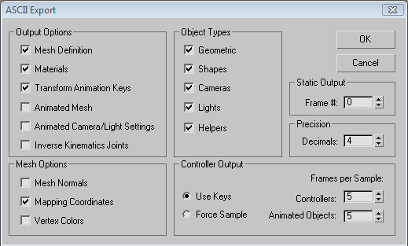 6) IMPORTING BACK INTO UNREAL Similar to exporting from Unreal, there are two ways to import the light map information for static meshes: a) Static Mesh Editor Select Mesh-->"Import Light Map Mesh (.ASE)..." from the main menu 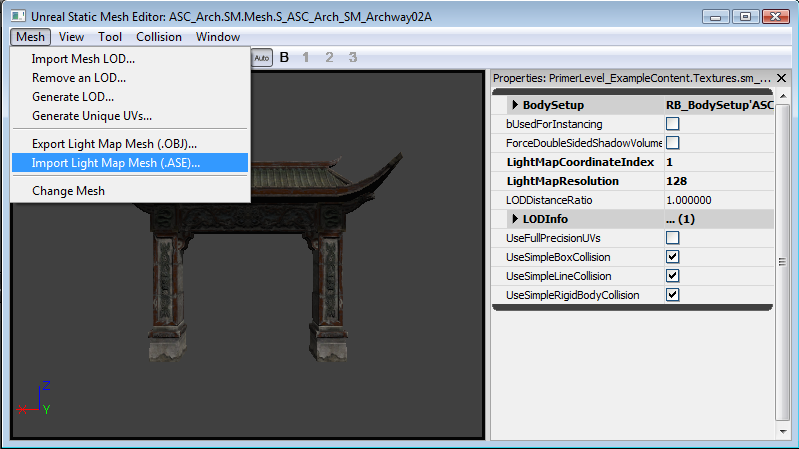 OR b) Content Browser In the content browser, select all the static meshes to import.
Right click on any of them, and select "Import Light Map Meshes (.ASE)..." 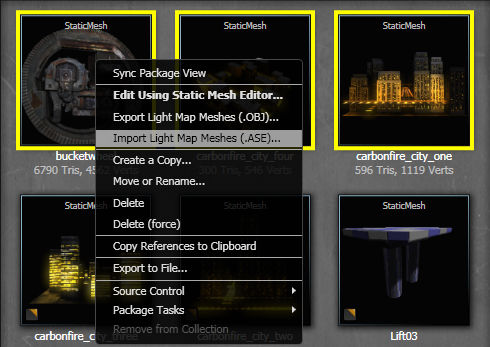 7) SELECTING A DIRECTORY Navigate to a directory you want the lightmap meshes imported from. NOTE: These will be imported with _UVs_LOD_# appended to the end of the file name, so make sure the file names matched as specified in Step 5. 8) DEBUGGING NOTE: If errors occur, you will be directed to the Log Window. The most common errors are the .ASE file is missing, the exported/imported data doesn't match, the export setting from MAX were not correct. 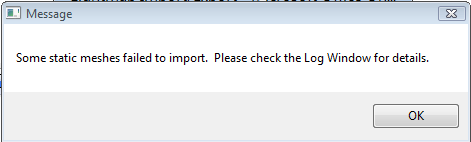 Example Output from the Log Window

Fracture Static Meshes
- Open a mesh in the Static Mesh browser.
- Select the Fracture Tool menu item, from the Tools menu.
- This will open a dialog that has functionality which allows you to calculate the fractures for the mesh. The options let you select how many chunks the mesh will be fractured into, as well as allowing you to flag individual chunks to be destructible or not. The chunk shape values scales the planes that the chunks are created along, and the modify points does just that - adds noise to the fractured planes.
- Once you've sliced the mesh using the precalculated fractures, you can use the show mode and slider to view the fractures.
- After slicing, a new object will be created. This object can be placed as a FracturedStaticMesh and shooting the object will cause the relevant chunks to be thrown off based on the averaged normals of the fracture planes (ensures that the chunk doesn't try to travel back into the base mesh).